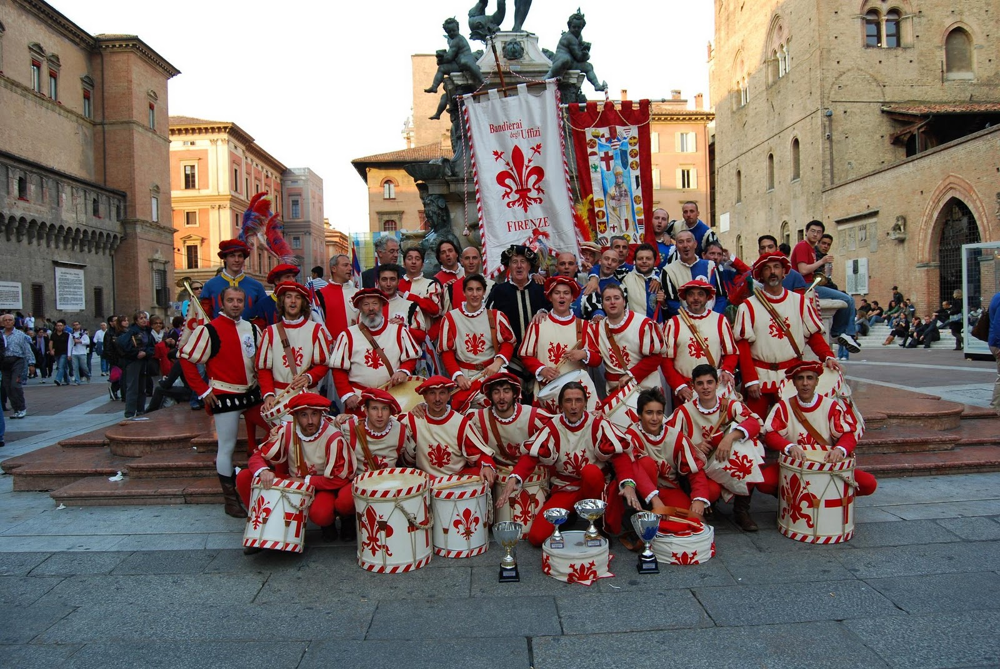

Флоренция славится множеством достопримечательностей и музеев. Но если Вы приехали с детьми или увлечены ночным отдыхом, то сможете найти в этой статье интересные развлечения на любой вкус.
Главными развлекательными мероприятиями, которые не оставляют равнодушными горожан и гостей Флоренции, остаются всевозможные праздники и фестивали. Так, в июне много болельщиков и просто зрителей собирает "Исторический футбол", игроки которого облачены в необычные старинные наряды, а сама игра напоминает скорее шоу.
Тем, кто приехал во Флоренцию с детьми, обязательно стоит посетить развлекательный центр «Фабиаландия». Захватывающие аттракционы, игровые комнаты, дискотеки и кафе – в этой удивительной сказочной стране можно провести весь день. Есть смысл проехать в сторону от центра, чтобы посетить игровую площадку La Carozza di Hans - одну из крупнейших в городе. Это место подходит для детей абсолютно всех возрастов. Здесь можно даже поучаствовать в рыцарском турнире или построить свой собственный замок. Если же нет времени ехать куда-то, а хочется как-то развлечь детей, можно зайти в игровую комнату, расположенную в центре Флоренции - "Ludoteca Centrale La bottega dei ragazzi". Развлечения в ней проходят, как правило, в виде простых и интересных физических и химических опытов, мастер-классов, представлений кукольного театра.
Любителям природы обязательно стоит посетить прекрасный ботанический сад Boboli Gardens, в котором представлены редчайшие растения и цветы, привезенные со всех уголков мира. Не забудьте заглянуть и в Парк Кашине, принадлежавший когда-то легендарным Медичи. Открытый для посещения в 19 веке, в наши дни парк является излюбленным местом прогулок и отдыха жителей и гостей города. Здесь так приятно побродить по аккуратным аллеям, полюбоваться тщательно продуманным ландшафтным дизайном и просто расслабиться после пережитого за день.
Ну и конечно, музеи... Их во Флоренции бесчисленное множество. Знаменита на весь мир Галерея Уффици, музей Сан-Марко, примечательный собранием фресок и росписями великих Фра Беато Анжелико и Фра Бартоломео, знакомство с экспозицией галереи Питти, расположенной в королевских апартаментах, или экспонатами Музея карет.
Среди необычных развлечений можно отметить возможность принять участие в каком-нибудь мастер-классе или посетить занятия в кулинарной школе. Например, недалеко от площади Беккариа находится кулинарная школа Гилио, предоставляющая возможность записавшимся ученикам не только понаблюдать за готовкой признанных шеф-поваров, но и приготовить что-то из тосканских блюд самостоятельно. Если же Вы не хотите тратить время на кулинарию и предпочитаете пробовать, а не готовить, можно поехать на одну из семейных виноделен в окрестностях города, где Вас не только познакомят с процессом приготовления, но и дадут продегустировать бокал-другой, предложив купить бутылочку с собой в качестве сувенира.
В городе работает довольно много ночных клубов и баров, однако их главными посетителями остаются именно туристы, местных жителей нельзя назвать любителями ночных развлечений. Наиболее популярными среди них являются Cantinetta di Verrazzano и Le Volpi e L'Uva. Самой популярной дискотекой считается Doris: любителям танцев в распоряжение предоставляется огромный танцпол с оригинальной подсветкой, а тем, кто хочет отдохнуть от шумной музыки, понравится уютный зал, где можно устроиться на белоснежных диванах и выпить пару фирменных коктейлей. В клубе Tenax, можно попасть на концерт какой-нибудь знаменитости или насладиться выступлением известных ди-джеев.
^Наверх